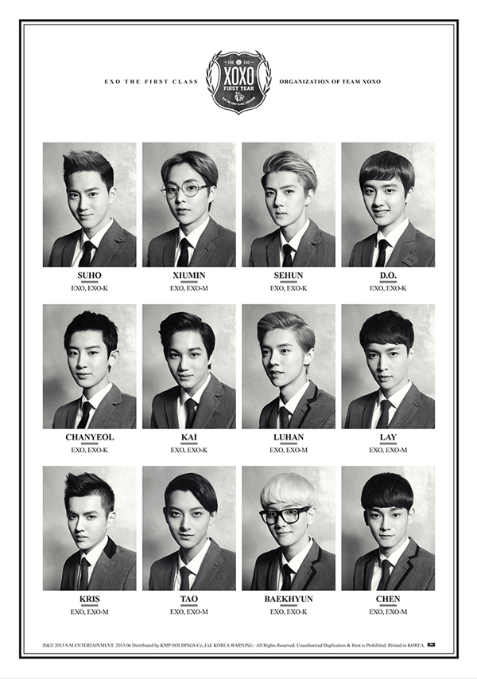

2012년, 때는 바야흐로 '아이돌 홍수 시대' 였다.
무수한 아이돌들이 브라운관에 모습을 드러내며 활발한 활동을 펼쳤고 TV 속에는 언제나 신나는 댄스 음악이 흘러나오곤 했다.
하지만 빛이 있으면 그림자가 있듯이 밝고 화려한 이면 뒤에는 씁쓸함이 존재한다.
이 해는 또한 역대 가장 많은 아이돌 팀이 데뷔한 해 였다.
총 63팀이 새롭게 데뷔를 하였고, 이중에 우리에게 익숙한 그룹들은 얼마 되지 않는다.
그렇다면 이 '아이돌 홍수시대'에서 살아남아 우리의 추억이 되어 준 그룹들은 누가있을까.
↑ AOA 3rd Mini Album [Heart Attack]
AOA 공식 홈페이지
| 이름 | 생년월일 | 포지션 |
|---|---|---|
| 지민 | 1991년 1월 8일 | 랩, 기타, 리더 |
| 유나 | 1992년 12월 30일 | 보컬, 키보드 |
| 혜정 | 1993년 8월 10일 | 보컬, 키보드 |
| 설현 | 1995년 1월 3일 | 보컬 |
| 찬미 | 1996년 6월 19일 | 랩 |
↑ BAP [대박사건]
BAP 인스타그램
| 이름 | 생년월일 | 포지션 |
|---|---|---|
| 힘찬 | 1990년 4월 19일 | 서브보컬 |
| 대현 | 1993년 6월 28일 | 리드보컬 |
| 영재 | 1994년 1월 24일 | 리드보컬 |
| 종업 | 1995년 2월 6일 | 서브보컬,메인댄서 |

↑ EXO The 1st Album 'XOXO (Kiss&Hug)' Repackage
| 이름 | 생년월일 | 포지션 |
|---|---|---|
| 수호 | 1991년 5월 22일 | 서브보컬,리더 |
| 찬열 | 1992년 11월 27일 | 랩 |
| 카이 | 1994년 1월 14일 | 메인댄서 |
| 디오 | 1993년 1월 12일 | 보컬 |
| 백현 | 1992년 5월 6일 | 보컬 |
| 세훈 | 1994년 4월 12일 | 랩,댄스 |
| 시우민 | 1990년 3월 26일 | 서브보컬 |
| 첸 | 1992년 9월 21일 | 메인보컬 |
| 레이 | 1991년 10월 7일 | 서브보컬 |

↑ EXID [알러뷰]
| 이름 | 생년월일 | 포지션 |
|---|---|---|
| LE | 1991년 12월 10일 | 메인래퍼, 리드댄서 |
| 정화 | 1995년 5월 8일 | 메인댄서, 리드래퍼, 서브보컬 |
| 하니 | 1992년 5월 1일 | 리드보컬, 리드댄서 |
| 솔지 | 1989년 1월 10일 | 리더, 메인보컬 |
| 혜린 | 1993년 8월 23일 | 리드보컬 |

↑ NU'EST 6TH MINI Album [Happily Ever After]
| 이름 | 생년월일 | 포지션 |
|---|---|---|
| JR | 1995년 6월 8일 | 리더, 메인래퍼, 메인댄서 |
| Aron | 1993년 5월 21일 | 서브보컬, 서브래퍼 |
| 백호 | 1995년 7월 21일 | 메인보컬 |
| 민현 | 1995년 8월 9일 | 리드보컬 |
| 렌 | 1995년 11월 3일 | 서브보컬 |